Na tuto cestu jsme se těšili už od cesty po Norsku. Téměř stejné složení jak minule + Pája. Celou trasu důkladně naplánoval Zimous a do deníčku zapsal Pája. Oběma za to patří velké poděkování. Opět jsme využili letecké dopravy tam i zpět.
| Kdy | 3.7. - 25.7.2006 (22 dní) |
|---|
| Kolik | 2310 km / stoupání 18000 m |
|---|
| Účastníci | Martin, Vašek, Franta, Mišák, Pája |
|---|
| Přejeté průsmyky |
Puerto de Navacerrada (1860 m), Puerto de Oncala (1454 m),
Col d'Aubisque (1710 m), Col du Soulor (1474), Col du Tourmalet (2115 m),
Col d'Aspin (1489 m), Col de Peyresourde (1563 m), Col du Portillon (1293 m),
Port de la Bonaigua (2072 m), Port de Cabris (2300 m), Port d'Envalira (2408 m),
Pas de la Casa (2050 m), Col de Chioula (1431 m), Mt. Ventoux (1912 m),
Col de Luens (1054 m), Col d'Ayen (1031 m)
|
|---|
| Trasa | GoogleEarth mapa (kmz) |
|---|
| Odkazy | Fotky:
(galerie nedostupná),
(galerie nedostupná),
(galerie nedostupná),
(galerie nedostupná),
Deníček (pdf verze)
|
|---|
| Odkazy jinam |
Filabel - Pyreneje 2005,
Pyractif - Tour De Pyrenees,
Biketouring - Cesty po Evropě,
Alternativa od Adventury,
Na kolech Pyrenejemi,
Carsten's Cycling Web - The eastern Pyrenees,
The Cycloclimbing Guide to the West Pyrenees
|
|---|
Deníček cesty (autor Pája, přepis Zuzka)
1. den
vzdálenost: 36,3 km | čas: 2:31 h:m | pr.: 16,06 km/h
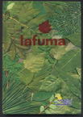
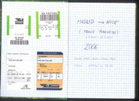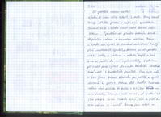Již počátek našeho malého výletu se nám velice vydařil. Letadlo firmy Smart Wings odletělo přesně s hodinovým zpožděním. Personál se to v letadle snažil ještě dohnat malým snackem. Španělsko nás přivítalo krásným třicetistupňovým vedrem a bezmrakou oblohou. Přímo z letadla nás vyvrhli do překrásné socialistické fronty plné rozvášněných španělů, ale nakonec se nám povedlo urvat i bedny s koly a ostatní bagáž a tak jsme se pustili do naší cykloskládačky. S úderem půl šesté jsme vyrazili do centra Madridu shlédnout také něco z turistických památek. Času bylo málo a tak jsme krásami Madridu jen prolétli a vyrazili severně k parku Monte del Pordo. Tma nás zastihla chvíli po vjezdu do parku a tak jsme zvolili noc mezi divočáky. Tábor jsme rozbili asi 50 km od opuštěné trati, jaké obvykle kolem Madridu bývají. Vlak tu jezdí tak sotva jedou za 5 minut!!!! Stravu jsme založili na již nabytých zkušenostech a metodě „co dům (kolo) dá“. A tak jsme si gulášovou polévku se špagetami a párkem vychutnali až za svitu originálního španělského měsíce. Do spacáků jsme zalezli s klidnou duší, protože vlaky ohlušení divočáci nemohli naší přítomnost vůbec zaregistrovat.
2. den
vzdálenost: 98 km | čas: 6:25 h:m | pr.: 16.21 km/h | stoupání: 1400 m
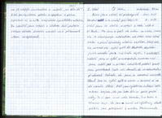Ráno jsme vstali až překvapivě snadno a za zvuků projíždějících vlaků jsme se sbalili a vyrazili k vodní nádrži el Pardo. Moc jsme se těšili na snídani na břehu jezera, ale za stejnojmenným městečkem nás čekala krásně zelená vrata s „pouze“ španělsky mluvícím vojákem, který nás bez mrknutí oka vyslal zpět do Madridu, abychom jejich národní park z východu objeli. S neutuchající radostí jsme se vydali přesně opačným směrem než jsme chtěli jet a přitom několikrát prokleli španělskou přívětivost. Cesta nás dovedla do rozestavěného předměstí Madridu, kde jsme se konečně nasnídali. Odsud jsme se vydali opět na sever a konečně se na nás usmálo štěstí. Našli jsme cyklotrasu vedoucí naším směrem, krajinou kde jsou kromě dálnice pouze prašné cesty. Po ní jsme minuli města Acobendas, Tres Cantos a Colmenar Viejo. Zde jsme museli od cyklotrasy odbočit, protože jsme potřebovali k městu Navacerrada, odkud jsme začali stoupat do městečka Puesto de Navacerrada, které leží přímo v 1860m vysokém pasu. Převýšení 600m jsme zdolali za necelé dvě hodiny a po jednom „oroseném“ jsme se rozhodli sjet dolů k Segovii. Ani jsme zde nepořídili vrcholové foto, protože zde neměli ceduli! Kdo to kdy viděl…. Pas bez cedule!!!! Cestou dolů získal Franta první technický trestný bod, čímž se zařadil na druhé místo za Mišáka, který za dopoledne stihl nasbírat dokonce 1,5 bodu za píchlou duši a prasklý drát. Zhruba ve 1200m se podél místního potoka rozkládal piknik park, kde pro místní španěly a ostatní turisty s vznostnými cedulemi zákazu rozdělávání ohně. Vyloženě nenápadně jsme posečkali až se turisté odeberou do svých domovů a utábořili se nedaleko starého akvaduktu.
3. den
vzdálenost: 140 km | čas: 6:53 h:m | pr.: 21,19 km/h
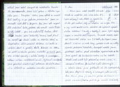Ráno jsme chtěli opustit rekreační oblast co nejdříve, ale zima kolem 80C (pára od pusy) nás držela ve spacácích až do půl sedmé, kdy se citelně oteplilo na celých 90C a my mohli začít balit. Oblečeni do vyloženě španělského oblečení (bundy a tepláky) jsme sjeli zbytek kopce a zamířili do města Segovia. Po cestě Mišák zvýšil své technické skóre na 2,5 bodu. Do Segovie jsme dorazili s očima na vrch hlavy, protože se zde už z dálky rýsovala překrásná katedrála. Rozespalé město jsme překvapili hodinu před otvíračkou supermarketu a tak jsme vyrazili do kulturního centra na lov fotek. Střední část města byla položená na vrcholu útesu a obklopená hradbami. Po hodině a půl strávených v němém úžasu jsme probloudili až do supermarketu, kde jsme doplnili zásoby a zakoupili jídlo na celý den. Nyní jsme již zamířili přímo do Franice čili směr severovýchod a pálili to po silnicích třetí třídy až neuvěřitelnou rychlostí. A proto jsme již chvíli po obědě byli v Turéganu, kde jsme si ve stínu hradeb dopřáli oběda a trochy spánku. Občerstveni jsme pokračovali dále do městečka Sepúlveda, které se jako většina starých španělských obydlí (tady to kdysi muselo ale vypadat) rozkládalo na takřka nedostupném skalnatém útesu. Aspoň jsme zde ale doplnili vodu a po chvilce odpočinku vyrazili směrem k městu Ayllón. U vesničky Bocegui Llas jsme přesedlali na silnici 4.třídy, abychom si užili krás španělského venkova. Do Ayllónu jsme dojeli až k večeru a dosti unaveni. Náladu nám, ale zvedlo zakoupení zlatavého moku u místní pumpy. Nedaleko za městečkem jsme ve stínu menšího lesíka nalezli útočiště na celou noc.
4. den
vzdálenost: 134 km | čas: 6:32 h:m | pr.: 21,03 km/h
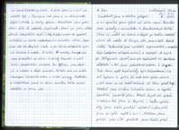Tentokrát jsme si trošku přispali a ze spacáků jsme vylezli až kolem osmé. Posnídali jsme sušenky s marmeládou a dvacet minut po deváté jsme už seděli na kolech a šlapali po trošku rušnější silnici do města El Burgo, kde jsme chtěli doplnit zásoby. Po dvanácté jsme zaútočili na supermarket v evropském stylu (podpořeni nákupním vozíkem) a zakoupili 10 baget po 250 gramech. Oběd jsme ale naplánovali až na druhou odpolední a tak jsme pokračovali směrem k Sorii. Tato silnice opět druhé třídy byla frekventovaná více než bychom si přáli, ale cesta zase rychle ubíhala a tak jsme se na oběd zastavili až 30 km před Sorii. Obědvali jsme ve stínu listnatého stromu na typické španělské kamenité pláni. Deset baget nás opravdu zmohlo a tak jsme si dopřáli i hoďku spánku. Když jsme takto přečkali nejhorší vedra, tak jsme se vydali opět k Sorii. Městem jsme prolítli jako vítr, protože jsme chtěli před spaním ještě zdolat menší pásek Puesto de Oncala (1454 m). Převýšení nebylo až tak strašné, tak 400-500 metrů, ale stál proti nám obludný vítr, který z docela příjemného kopce udělal skoro horu. Když jsme vyjeli na vrcholek pasu tak jsme obklopeni větrnými elektrárnami udělali vrcholové foto a rychle vyrazili dolů, protože už bylo půl desáté a byla opravdu slušná zima (i na čechy). O sto metrů níže jsme (samozřejmě Fanda) potkali na křižovatce kamennou boudu, ze které se posléze vyklubal spásný bungalov i s krbem. Volba byla jasná, protože venku už nebylo vidět a byla tam strašná zima.
5. den
vzdálenost: 142 km | čas: 7:07 h:m | pr.: 20,97 km/h
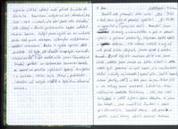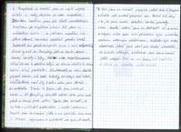Budík nás probudil kolem sedmé a tak jsme rychle či pomaleji vyskákali ze spacáků a ještě rychleji vše sbalili. Posnídali jsme opět sušenky s marmeládou a pak se pomalu vykulili z příjemné pastoušky, abychom opět zápolili s větrem. Vítr citelně zeslábl a my už měli před sebou stejnak jenom sjezd k městu Arnedo. Sjezd byl, ale mnohem delší než jsme čekali, protože jsme zhruba na 60 km klesli o 1000m. Město bylo posazené na úpatí kopce, ale nevykazovalo žádné známky zajímavostí (vysoké věže, lesklé kopule, krásné parky, atd.) a tak jsme ho jen lehce lízli a na nákupy jsme směřovali k dalšímu 12 km vzdálenému městečku Calahorra. Zde jsme vzali krám stečí. A ještě k tomu všemu dobrému co jsme tam koupili, jsme navštívili Fruterii a ulovili pár šťavnatých kousků ovoce. Zde jsme se podle naší trasy stočili severně směrem k Pamploně a snažili jsme se najít nějaké místo u vody, abychom se mohli naobědvat. Dlouhou hodinu jsme jeli dost neutěšenou krajinou po rozpálené silnici až jsme u městečka Lerín na jednom mostíku ve stínu stromů konečně spáchali pozdní oběd. Tentokrát bez poledního spánku jsme v září odpoledního slunce vyrazili do Pamplóny, kde se touto dobou konají závody s býky. Cesta nám znepříjemňovalo silné slunce a posléze když se slunce chýlilo k obzoru také silní protivítr. Skutečnost, že nám dochází plynová bomba, což dosti kriticky ohrožovalo naší večeři, nám ale dodávala nové síly. V sedm večer jsme dorazili do městečka Puerte la Reina, kde jsme nesehnali bombu a do Pamplóny nám ještě zbývalo 20 km přes menší pásek a hlavně proti větru. Proto jsme rozhodli, že bychom si mohli dát teplou večeři v místní restauraci. Dostali jsme tříchodové jídlo a na oplátku tam nechali 50 euro. Když jsme se vykutáleli ven bylo již devět, ale i tak jsme se rozhodli popojet ještě kus k Pamploně. Několik set metrů převýšení nám foukal tak silný vítr, že jsme museli nasadit i horské převody. Kolem desáté večerní jsme se doplahočili až na vrchol. Kopec nebo spíš celé pohoříčko bylo na vrcholku posázeno větrnými elektrárnami. Nedaleko bylo rozsáhlé odpočívadlo, které jsme vybrali jako dnešní útočiště. Za hukotu větrných elektráren jsme konce konců ještě nespali. Přes noc nás krom lidí jezdících se dívat na ohňostroj nikdo nerušil.
6. den
vzdálenost: 140 km | čas: 7:27 h:m | pr.: 19,43 km/h
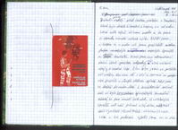

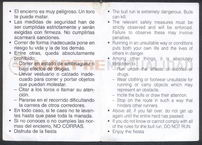Probudili jsme se raději před šestou, protože v Pamploně, která byla deset kilometrů z kopce, se od sedmi koná běh býků ulicemi města a to jsme si opravdu nemohli nechat ujít. Slétli jsme z kopce a v sedm už jsme pojížděli městem plným rozespalých nebo ospalých španělů a dalších turistů. Minuli jsme obří zatravněnou plochu úplně posetou odpadky, i když ulice na tom nebyly o mnoho lépe. Čím více jsme se přibližovali centru tím více lidí v bílé a červené se pohybovalo po ulicích v různých stádiích opilosti. Když jsme se dostali do centra dění k toreadorské aréně tak už byla koncentrace býkůchtivých fanoušků taková, že jsme museli kola vést. U některých španělů měl náš průvod velký ohlas, někteří chtěli vyměnit různé části oblečení za naše kola a tak podobně. Vyfotili jsme co se dalo a vyjeli pryč z centra a již tradičně posnídali sušenky s marmeládou a ovocem. Kolem jedenácté jsme vyrazili k moři do San Sebastianu. V cestě nám stály tři malé pásky docela rovnoměrně rozložené po naší cestě. Cestu jsme zvolili s menšími dohady o průjezdnosti dvou variant. Nakonec vyhrála varianta fyzicky náročnější, ale rozhodně hezčí krajinou. Cesta se kroutila, šla nahoru a zas dolu skrz Baskitskou oblast. Příroda byla opravdu překrásná, ale Fandu stála dva trestné body (za píchlé duše), které mu zajistili těsné prvenství v technickém bodování. Posledních 30 km bylo sice podél řeky, ale rozhodně ne celé z kopce a tak jsme do San Sebastiana dojeli až v sedm. Opět jsme vyloupili supermarket a šli se vykoupat do oceánu. O poznání čistější jsme se vydali za město hledat něco klidného ke spánku. Nedaleko poslední zástavby jsme objevili starý vojenský bunkr s krásnou rovnou střechou a tak jsme opět spali pod hvězdami.
7. den
vzdálenost: 119 km | čas: 5:51 h:m | pr.: 21,28 km/h
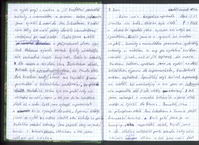Ráno nás kupodivu neprobudilo sluníčko, ale budík. Obloha byla šedá a skoro to vypadalo jako bychom ani nebyli ve Španělsku. Sbalili jsme se a vyrazili na snídani na pláž. Sušenky s marmeládou pro změnu vystřídaly sušenky s nutelou a my po vydatné snídani nemohli jinak, než si jít zaplavat do oceánu. Osvěženi ledovou sprchou jsme se vydali na další křižáckou výpravu do supermarketu, tentokrát ovšem zbytečně. Španělský zvyk zavírat supermarkety na neděli byl neochvějný a ani pani na informacích nám neporadila zdali je zde nějaký otevřený. A tak jsme nakoupili v menších krámcích v staré části města a vyrazili do Francie. Promotali jsme se průmyslovou částí San Sebastianu a Irunu a projeli francouzské hranice. Chvíli poté jsme na kempink-plácku uspořádali oběd. Pojedli jsme a do většího městečka proti proudu řeky nám zbývalo ještě 60 km a tak jsme zvolili dost rychlé tempo s podtextem „kdo utaví Fandu vyhrál“. To se nám ovšem nepovedlo, ale zase jsme za tři hoďky nabírali vodu v městečku St. Jean de Port. Projeli jsme trošku okolí a našli fantastické místečko u mostíku přes říčku s krásnou travičkou a modrou lagunkou, prostě romantika.
8. den
vzdálenost: 119 km | čas: 6:37 h:m | pr.: 18,47 km/h | stoupání: 1400 m
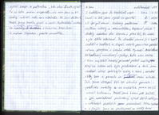S budíčkem jsme to tentokrát nepřehnali a tak jsme vylezli ze spacáků až po půl osmé. Sušenky podtržené zbytkem nutely a marmeládou „tajemné chuti“ dodaly novému dni barvu i přesto, že nebe bylo stále zatažené. Po deváté jsme již opět seděli v sedlech a šlapali vstříc prvnímu pořádnému převýšení v úvodní části Pyrenejí. Následoval tříhodinový namáhavý výstup, kde nám občas i ten nejlehčí horský převod přišel málo. Krajina kolem nás byla překrásná a tak jsme sledovali volně pobíhající krávy a ovce, mohutné štíty hor a pomalu se prokousávali ranní mlhou. Jak jsme stoupali tak se slunko pomalu prodíralo mráčky a na vrcholku jsme se již mazali krémem. Projeli jsme kolem pár salaší a pak následoval překrásný sjezd dolů, kde jsme v některých pasážích překračovali 70 km rychlost a v jiných jsme se přetlačovali se stády krav a býků, kdo má právo využívat tuto komunikaci. Prolétli jsme pár vesničkami tak rychle, že jsme minuli správnou odbočku a skončili až v městečku Mauliou – Licharre. Tam jsme to tedy otočili zpět na jih a osedlali silnici třetí třídy a na oběd jsme dojeli do Tardets-Sorholus. Nacpali jsme, co se do nás vešlo a po čtvrté jsme již seděli opět v sedlech a ve vedru, při kterém padají i mouchy, jsme šlapali směrem k městečku Areste, kde by mohl být supermarket, abychom doplnili zásoby. Supermarkety se nám ovšem vyhýbaly a tak jsme projeli i Arettou, St. Christan a dojeli až do Louvie-Juzon, kde nám o 3 minuty zavřeli. Trošku zklamáni jsme vyrazili do Laruns. Po cestě jsme náhodou potkali ještě otevřenou pekárnu, která všechno zachránila. Přejeli jsme řeku a opět zde našli krásný plácek u vody i se stolečkem. Co víc si může unavený cyklista přát?
9. den
vzdálenost: 83,5 | čas: 5:20 h:m | pr.: 16,0 km/h | stoupání: 1800 m
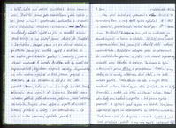Noc plná hvězd se proměnila v zamračený den a my opět rychle vyskákali ze spacáků, protože nás čekal hned po ránu Col d´Aubisque (1710 m) a ten jet ve vedrech se samozřejmě nikomu nechtělo. Jelikož jsme ale neměli koupenou snídani, tak jsme již v devět stáli u dveří supermarketu. Obtěžkáni nákupem jsme se přesunuli do nedalekého parku a jídlo více méně symetricky rozložili mezi žaludek a brašny. Do kopce to bylo něco málo přes 16 km s převýšením 1200m a my věděli, že se mraky většinou drží v údolí, a že bude nahoře pařák. Cesta docela ubíhala a my se stále prodírali mlhou, která by se dala krájet. Za tři hodiny jsme stáli u cedule, ale stále obklopeni mlhou. Počasí nám tedy rozhodně nepřálo a tak jsme rychle posvačili a vyrazili pod kopec na oběd. Ten jsme uspořádali opět na odpočívadle za lehkého mrholení. Jak jsme sjeli do Argelés-Gazost ( 400 m. n. m.), tak přestalo i pršet a my zde opět nakoupili něco na večer. Bylo již kolem šesté a tak jsme tušili, že Col de Tourmalet již dneska nepokoříme. To nám ale nebránilo v tom se k němu náležitě přiblížit. A tak jsme najeli na speciální cyklotrasu, která byla vybudována místo staré železniční trati a tudíž lemována železničními zastávkami. Ta bohužel vedla jen do Soulomu, kde jsme ovšem stejně odbočovali a tak jsme vyrazili krásným údolím podél pravé horské řeky, kde bylo dost místa tak akorát pro silnici a řeku. Naštěstí po pár kilometrech se údolí rozšířilo a bylo vyplněno několika vesničkami. V Luz-St-Saveur jsme minuli pár posledních kempů a začali jsme stoupat do pasu hledajíce nějaké to místečko na spaní. Silnice vedla opět podél vody a tak jsme našli zapomenutou odbočku s přístupem k říčce, kde jsme se za lehkého mrholení rozhodli přespat.
10. den
vzdálenost: 94,5 km | čas: 6:15 h:m | pr.: 15,51 km/h | stoupání: 2500 m
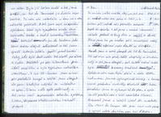Za zmínku ještě určitě stojí, že jak jsme si večer ustlali tak jsme si lehli, ale kolem půl jedné nás probudilo bubnování kapek do spacáku a tak jsme v značně rozmrzelé náladě postavili za tmy stan a uchýlili se do něj. Ráno jsme ho po snídani balili samozřejmě mokrý a i přes zatažené nebe doufali ve sluníčko. Nasedli jsme a začali stoupat do Col de Tournalet (2115 m). Již od rána nás předjížděli skupinky se silničními koly a jak jsme stoupali, tak každé volné místo bylo vyplněno karavany snad všech typů. Splnilo se nám naše tajné přání a okolo 1800 m nad mořem jsme se vyhoupli nad mraky a konečně uzřeli překrásné vrcholky okolních hor. Kolem poledního jsme se vyhoupli až do pasu a rychle usušili provlhlé věci v září horského slunce. Odpočatí jsme zahájili sjezd do městečka Ste-Marie de Campu, kde jsme něco málo pojedli a vyrazili vstříc druhému pasu Col d´Aspin (1489 m). Za zmínku také stojí že cestou dolů se také Pája zařadil do trestného bodování prasklým drátem a získal tak 0,5 trestného bodu. A tak jsme stoupali do 1500m vysokého pasu opět přeplněného karavany, které očekávali zítřejší průjezd Tour de France. V kopci ač mírném se Vaškovi zamotalo něco dosti mazlavého do kola a několikanásobná oprava a úprava byla ohodnocena celým 1 trestným technickým bodem. Na vrcholku nebylo přes karavany vůbec vidět a tak jsme se bez delšího váhání rozjeli dolů. Prolétli jsme městem Arreua a večeři koupili až v Bordéres-Lourou. Jelikož bylo ještě před šestou tak jsme se rozhodli zdolat i třetí pas Col de Peyresourde (1563 m). Stoupání na něj bylo ze všech nejnižší a my byli už značně unaveni, takže po rovném boji jsme za hoďku a kousek stáli na vrcholku. Opět zde bylo turistů více než je zdrávo a tak jsme se vydali hledat místo ke spaní ( s řekou poblíž) po cestě dolů. Letos máme štěstí a vždy se něco najde. I tentokrát.
11. den
vzdálenost: 95 km | čas: 5:40 h:m | pr.: 17,4 km/h | stoupání: 2000 m
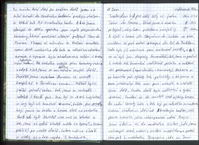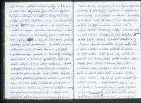Tento den byl pro nás celý ve jménu Tour de France. Ráno jsme si trochu přispali, abychom peletonu neujeli :-). A sjeli z kopce do Bagnéres-de-Luchon na lehčí snídani a pak začali stoupat do Col du Portillou (1293 m). Cesta byla již uzavřena pro motorová vozidla a tak na ní byli jen skupinky fanoušků. Jak jsme se prodírali k vrcholu tak fanoušků viditelně přibylo a někteří nás povzbuzovali (aspoň doufám = francouzsky). Nahoře se to hemžilo jak cyklisty tak policisty a tak jsme si krom vrcholového fota moc pasu neužili a uháněli jsme dolů. Cesta dolů byla nádherná a rychlá zároveň. Fandovi se ale zamotala část výztuhy brašen do zadní kazety kola a tak byl po několika-minutovém čekání ohodnocen dalším trestným bodem, což pouze upevnilo jeho nekompromisní vedení. Projeli jsme údolím až do městečka Vielha, kde jsme nakoupili oběd, večeři a snídani na další den a počali stoupat k městečku Baquieira, kde se Tour de France odklání od naší cesty a kde jsme si chtěli také peloton prohlédnout a vyfotit. Jak jsme stoupali tak opět zástupy fanoušků sílily a bylo také vidět, že jsme ve Španělsku, protože fanoušci byli mnohem více vstřícnější a většina aspoň zdravila. Na zaslíbené místo jsme dorazili o dvě hoďky dříve a tak jsme stihli rychlý oběd a taky se zúčastnili průjezdu karavany před pelotonem. Ta čítala mnoho reklamních aut různých tvarů a velikostí s pestrobarevnými úpravami a tanečníky rozhazující upomínkové a reklamní předměty. Lidé jsou všude stejní, jak je něco zadarmo…. A tak netrvalo dlouho a první skupinka jezdců se za mohutného jásání objevila i v naší zatáčce. Skupinky byly pěkně prokládány policejními hlídkami a servisními vozy asi jako špíz (omluvte mě píšu to večer a mám hlad ). Všichni se kolem nás prořítili nedbaje osmiprocentního stoupání, že si člověk stihl přečíst sotva číslo a zaznamenat barvu. Celá cesta byla lemovaná fanoušky a doplněna policisty s výstražnými vestičkami a píšťalkami, kteří občas umravňovali rozvášněné fanoušky. Bylo docela znát, že jsme již ve Španělsku, protože tu bylo mnohem méně lidí a skoro žádné karavany, i když zrovna zde se měl lámat chleba. Za naší zatáčkou peloton čekalo ještě několik kilometrů stoupání a ty už jsme bohužel neviděli. Za půl hoďky bylo po všem a všichni se začali rozcházet do hotelů a ke svým autům. A tak jsme i my vyrazili do pasu Port de la Bonaigna (2072 m), který měří necelých 2100m. nahoře jsme udělali vrcholovou fotku, dali si „vrcholovou“ mrkev, pokecali s volně pobíhajícími koňmi a pak to pustili dolů a hodinu klesali o celých 1100m. Tady už byly opět klasické španělské vesničky a také rozhodně tepleji než ve 2000m. Tentokrát jsme si vybrali místečko na spaní na odlehlé straně jezera v dávno opuštěném statku, kde jsme také přenocovali.
12. den
vzdálenost: 87 km | čas: 6:20 h:m | pr.: 14.77 km/h | stoupání: 2200 m
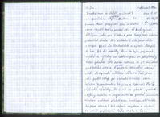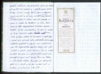Dneska jsme se chtěli rozloučit se Španělskem a vrátit se přes Andoru do Francie. Naše přepychové spací místečko jsme opustili trošku později, ale od Andory nás dělil jen jeden pas Port de Cabris (2300 m), přes který vede takzvaná pašerácká stezka. Nic složitého . A tak jsme stále z kopce sjeli do Montescalda a vyrazili stoupa do hor. Až do vesničky Alins to bylo příjemně rychlé a vyhlídky na zdolání pasu se pohybovaly kolem poledne. Zde ovšem začínala ta již zmíněná pašerácká stezka. A španělští pašeráci očividně nemají rádi dvouproudové asfaltové dálnice. Tak jsme jeli podél řeky po uzoučké silničce skrze bohem zapomenutou krajinu a okolo nás čnily skalnaté výběžky. Po chvíli se vytratili i poslední zbytky asfaltu a my se ocitli na prašné kamenité silničce vedoucí překrásnou krajinou stále výše. Jak jsme stoupali tak ubývalo vegetace a objevili se volně popásající stáda skotu a koní, prostě nádhera. Na vrcholek jsme se dostali až po čtvrté hodině a v patách jsme měli černé hřmící mraky. A tak jsme se nahoře moc neohřáli a už jsme ujížděli pro změnu po krásné andorské asfaltové dálnici, která začínala nahoře na pasu a vedla do Andorry la Vella. Dolů jsme se řítili doprovázeni hukotem kapek. Déšť byl ale nemilosrdný a tak jsme se museli na kraji hlavního města schovat u jednoho nóbl baráku. Náhle to tu ožilo a nějaký pán s paní nám přinesli kafe a čokoládu, takže jsme viditelně pookřáli a v pauze mezi slejvákama sjeli do supermarketu doplnit zásoby. Vše jsme nabalili a vyrazili směr Francie. Jak se začínalo smrákat, tak jsme se v strmém údolí uchýlili mezi „momentálně nepoužívané“ domky. Byli jsme v 1700m a je tu docela chladno. Dnes Pája při stoupání přišel o 2.drát a tak srovnal krok s Vaškem na shodném 1 TTB.
13. den
vzdálenost: 156 km | čas: 7:16 h:m | pr.: 22,27 km/h | stoupání: 1600 m
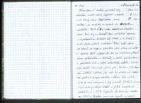Ráno jsme si raději přivstali, aby náhodou místní rolník nepřišel v sobotu moc brzy ráno. Naplánovali jsme snídani na vrcholu a vyrazili do 2408m vysokého Post d´Elviera. Před desátou jsme tam byli. Provedli jsme náročné operace s vyndáváním klíšťat ( 2x Fanda a 1x Mišák) a šli jsme ulovit vrcholové foto. Když jsme se ohřáli na ranním sluníčku, tak jsme se oblékli a vyrazili dolů z kopce do Ax Les Hermes. Projeli jsme příhraničními obchody a obřími parkovišti a pokračovali stále z kopce překrásným údolím. Silnice byla skvělá 40minut jsme jeli 40-50 z 5% kopce bez větších zatáček, že nás to skoro až uspalo. Páju pěkně houpala osmička v zadním kole a tak jsme mezi nákupem v Ax provedli (Mišák) výměnu dvou prasklých drátů a Pája tak bezpracně poskočil o 1 TTB kupředu do těsného závěsu za Mišáka. Rychle jsme se najedli a začali stoupat do Col de Chioula 1431m. n. m. Tímto jsme zdolali již poslední pořádný Pyrenejský pas. Mišák zde bohužel přišel již o druhý drát a tím pádem získal 3. TTB. Dále již byla cesta po menší silničce a stále z kopce takže jsme 50 km do Quillan hravě zmákli a po nákupu jsme se začali přibližovat ke Carcassonne. Pár kilometrů před městem našli zapadlé místečko s kamenitým přístupem k řece. Kopačka v řece a výborná večeře opět nechyběla. Konečně jsme také objevili první skliditelné ovoce – a to fíky. Konečně francouzské zpestření jídelníčku.
14. den
vzdálenost: 121 km | čas: 6:05 h:m | pr.: 20,94 km/h
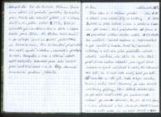Ráno si Pája s Vaškem přivstal a očesali nějaké fíky na snídani. Zaplavali si ještě jednou v řece a přidali se k ostatním při balení. Chvíli před desátou jsme se už promotávali uličkami starého města. Již standardně navštívili Tourist centrum a supermarket a pak zamířili k hradu. Hrad byl opravdu velkolepý a tak nám jeho prohlídka zabrala několik hodinek, ale stálo to za to. Chvíli před druhou hodinou odpolední jsme vyjeli hlavní branou a vyrazili na východ k moři. Na informacích nám řekli, že k moři vede umělý kanál pro lodě, podél kterého se dá jet. Cesta to byla vskutku famózní. Klidný kanál lemovaný po obou březích mohutnými platany, které dodávali dostatek stínu jak pro vodní hladinu tak pro prašnou cestu vedoucí po obou stranách. Ale jak to tak bývá nic není dokonalé a tak zhruba po deseti kilometrech už vedla cesta jen po jedné straně a také se značně zúžila až do vyšlapané pěšinky. Ale i tak jsme po ni urazili polovinu vzdálenosti k moři. Jak se přiblížil večer tak jsme se odvážili vjet i na silnici a tím zbytek cesty podstatně zrychlit. Rychle jsme projeli městem Braziers a pak jsme potkali cyklotrasu, která nás dovedla skoro až a pláž. Závěr cesty nám ještě urychlil přívětivý cyklista, který nás rovnou dovedl až na pláž mezi dva kempy. Ale i tak se již smrákalo a tak jsme hledali místo na přespání. Podařilo se najít místo přesně mezi dvěma kempy, pěkně zastrčené a přitom 100m od moře. Byla již tma, když přes plot krytý křovisky u blízké zahrádky začal nějaký francouz něco halekat o tom, že místo je soukromé. Zachránil nás ale Martin, který to sním bleskurychle vyřídil a už jsme o tom francouzovi do rána ani nevěděli. Zato místní diskotéka neuznávala noční klid po desáté a tak jsme usínali při výběru z let 80. a 90.
15. den
vzdálenost: 85km | čas: 4:37 h:m | pr.: 19,91 km/h
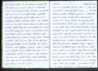Ráno nás probudilo sluníčko, které výjimečně nezakrývaly žádné hory. Stávalo se ještě radostněji, protože se pro změnu projevil druhý soused, který nás pozval na šálek ranní kávy a tak se den pro nás vyvíjel opravdu krásně. Vrátili jsme se zpět ke kanálu a jeli podle něho ještě několik kilometrů a pak jsme přesedlali na silnici podél pobřeží. Po krajnici bylo zaparkováno spoustu aut jejichž majitelé se pekli na pláži. A tak jsme dojeli až do Seté, poobědvali jsme a trošku si zaplavali. Objevili jsme zde také cykloservis a dokoupili dráty a chybějící část Pájova představce, který mu upadl již na letišti. Kolem čtvrté jsme opět vyrazili podél riviery, kde vedla cesta buď po pláži, což bylo nereálné a nebo podél velmi podezřelého potrubí. Po pár kilometrech jízdy jsme zjistili k čemu může být takové potrubí dobré – vodní bagr pomocí něho čistil dno kanálu…..překrásná vůně!!!!!! I to jsme ale přežili a u benzínky si pak očistili své zaprášené oře, takže to v porovnání s naším oblečením vypadalo, že jsme si kola někde půjčili. Se soumrakem jsme dojeli k městu La grande Mota a jelikož už nebylo moc vidět tak jsme to zapíchli nedaleko pláže. Vždycky jsme si mysleli, že u moře komáři nejsou, ale tady byli a to jsme ještě neviděli. Nalétávali na nás v letkách a to že se mezitím setmělo jim vůbec nevadilo a tak sníst jen večeři nás stálo mnoho štípanců do rukou držící lžíci. Spaní se ukázalo ještě problematičtější, protože ač byla půlnoc tak venku bylo krásných 25 0C a v tom se nedá zavřít do spacáku. A tak jsme se do rána moc nevyspali a byli o nějaký ten centilitr krve chudší . A málem bych zapomněl, že Fanda přišel o šroubky od nosiče a to rovnou o oba dva. To se dalo ohodnotit snad jedině 1 TTB. Pro přehlednost uvedu tabulku TTB :-)
Fanda 5 | Mišák 3 | Pája 2 | Vašek 1 | Martin 0
Jó to je osud :-)
16. den
vzdálenost: 110,5 km | čas: 5:26 h:m | pr.: 21,37 km/h
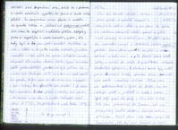Ráno bylo opravdu zoufalé. Všichni jsme vylezli ze spacáků nevyspalý a drbající se kde se dalo a tak jsme se rychle (za asistence komárů) sbalili a vyrazili na pláž smýt chmury z náročné noci. Na pláži jsme se nasnídali, umyli a částečně i něco vyprali, protože krom dvou rybářů na pláži v sedm opravdu nikdo není. Po desáté jsme zvedli kotvy a vyrazili do města Aigues-Mortes obklopeného středověkým opevněním. A vskutku ač zvenčí byly vidět pouze masivní hradby zpevněné věžemi, uvnitř bylo město s uzounkými uličkami. Pěkně jsme vše zdokumentovali a vyrazili do Arbes. Tam jsme nakoupili oběd a prohlídli si město s arénou. Mišák tady vyměnil dva dráty a tím získal 4.TTB. dále jsme pokračovali do Tarascou, kde mají přepychový hrádek obklopený slušným vodním příkopem. Přejeli jsme řeku a přejeli do Beaucaire, kde byl zase hrádek na kopci. A dnes se také konečně zabodoval Martin a píchlou duší získal svůj první TTB a tím dohnal Vaška. Vyměnili jsme duši a stočili se směrem na Pont du Gart. Podle mapy jsme našli krásné klidné místo u vody a tam to také zakempovali. Opět možnost koupání při západu slunce a kotlík plný večeře nám zvedl náladu. Na odhánění komárů jsme dnes mohli i založit menší ohýnek a vážně to fungovalo.
17. den
vzdálenost: 95,5 km | čas: 4:55 h:m | pr.: 20,19 km/h
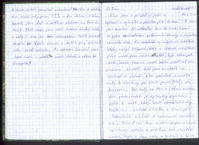Ráno jsme si přispali a ještě si zaplavali v rybníčku s písčitou pláží. Osvěženi jsme zamířili do městečka Pont du Gart, které se pyšní akvaduktem postaveným římany v největším rozkvětu říše. Na akvaduktu by nebylo nic zvláštního kdyby nebyl tříposchoďový a zároveň nesloužil jako most před rozlehlé údolí. Bylo kolem jedenácté, takže jsme se museli občas prodírat skupinkami turistů. Poté jsme se stočili na východ a uháněli si to společně s mnoha auty a kamióny po silnici první třídy do Avignonu. Mají tady asi tisíc a jedno muzeum. Ale perlou města je opevněný papežský palác a most, který končí uprostřed řeky. Projeli jsme i uličkami v centru a minuli pár žebrajících cikánů a nakonec se vymotali ven. Poobědvali jsme ve stínu supermarketu na okraji města a přečkali tak největší vedra. Doplnili jsme vodu a vyrazili k hoře Mout Ventoux, která je vysoká pouze 1909 m, ale je obklopena údolím o nadmořské výšce 100m, takže docela cyklistický oříšek. Výškový tábor jsme založili 19 km od vrcholu v nadmoř. výšce 500m na útulném místečku nedaleko meruňkového sadu. Bohužel bez vody, ale pro jednou se dá sprchování odložit.
18. den
vzdálenost: 140,5 km | čas: 7:32 h:m | pr.: 19,09 km/h | stoupání: 2000 m
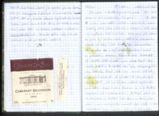Ráno jsme si tentokrát přivstali, protože jsme se báli silného sluníčka. Po sedmé jsme seděli v sedlech a uháněli si to nahoru. Zatáčky hltali jednu vrstevnici za druhou v 12% stoupání a my se rychle blížili k vrcholu. A tak už po půl jedenácté jsme byli všichni nahoře a oddávali se překrásnému výhledu na alpy i jižní Francii. Hora monumentálně ční na okraji Alp a její zdánlivě zasněžený vrcholek se proměnil v obrovskou kamenitou pláň. Cestou dolů již sluníčko hřálo a cesta rychle ubíhala. Projeli jsme městy Sault a St. Christol, které byly obklopeny fialovými lány levandule. Projeli jsme kolem vojenské základny a po chvíli dojeli do st. Michel. Na sluníčku bylo krásných 39 0C, ale my už jsme si docela zvykli. Jeli jsme stále z kopce k řece Durance a v La Brillarne koupili něco málo k večeři a snídani. Přehoupli jsme se na druhý břeh a sledovali říčku Asse, ve které jako jedné z mála modrých čar na mapě, byla voda. Po deseti kilometrech jsme zamířili k jihu a hned za městem jsme si našli pěkné místo na spaní. Hlavně tu byla oproti včerejšku tekoucí voda, kde jsme mohli konečně smýt dvoudenní nános soli a prachu.
19. den
vzdálenost: 106 km | čas: 6:03 h:m | pr.: 18,37 km/h | stoupání: 1800 m
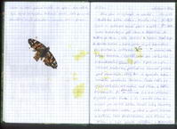Ráno jsme se vyhoupli ze spacáků standardně kolem sedmé. Hnedka ráno jsme si vystoupali menší pásek a opět mezi levandulovými poli jsme se dostali až do Moustiers ste. Marie, zde začínal kaňon Grand Canon du Corniche Subline. Zvolili jsme si po konzultaci se slečnou u informací severní cestu kolem kaňonu. Vyrazili jsme do několikasetmetrového stoupání a pak se nám otevřel překrásný pohled na azurové jezero pod obrovskými štíty hor a opravdu monumentální soutěska kaňonu. Cesta vedla ve výšce několikasetmetrů nad řekou a řeku kopírovala. Ač jsme jeli po rovince tak naše průměrná rychlost prudce klesla a do němého úžasu se ozýval jen cvakot foťáku. Obrovské srázy lemovaly řeku s průzračnou vodou, po které se plavili turisté na loďkách. Cesta podél kaňonu byla dlouhá asi 30 km a byla poseta vyhlídkami a nizozemskými turisty. Kaňon končí u městečka Castellane a my jsme se vydali směrem k Nice. Cesta na jihovýchod již neměla být náročná, ale cestou jsme potkali dva pasíky. Večer již bylo chladněji a tak cesta rychle utíkala a my jsme v půl desáté našli pěkné místečko na pasece kryté od silnice stromy. Akorát večerní sprcha dneska chyběla, ale to tolik nevadilo, protože to doženeme v Nice. Ke konci kaňonu se Mišák opět skamarádil s dalším trnem a završil své technické skóre ne kulatých 5 bodů.
20. den
vzdálenost: 108,5 km | čas: 5:06 h:m | pr.: 22,6 km/h
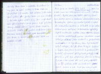Ráno jsme se trošku déle balili a tak jsme na cestu vyrazili až v půl desáté (Fandova ranní balící show). Rychle jsme projížděli údolím, které bylo krásně rovné a obklopené skalnatými hřbety. Po krásných 20 km nás cesta vyvedla z údolí do skalnatého kaňonu a klikatila se po jedné straně mezi ostrými skalnatými výběžky opět oněměni krásou jsme pomalu klesali z tisíce metrů nad mořem směrem k moři. 30 km před Nice jsme zastavili u překrásného vodopádu i s lagunkou, kam byl bohužel zákaz vstupu. Až do Nice to bylo krásně z kopce. Jak jsme se blížili k pobřeží, tak hotelů významně přibylo až pokryly celé pobřeží a pláž byla přeplněna slunícími se turisty. Byli jsme v Nice výrazně dřív než jsme předpokládali a tak jsme po vydatném obědě zamířili do centra shánět krabice na kola. Projeli jsme všechny 4 cyklo prodejny co tu mají, ale krabice jsme sehnali jen dvě. Vykoupali jsme se a rozhodli se ještě zkusit komerční zónu. Tam nám řekli, že krabice snad budou mít, ale komerční zóna je dobrých 10 km od pobřeží (letiště) a ještě k tomu po 4 proudové silnici, což není zrovna nejlepší místo na přepravu. Nakoupili jsme večeři a vrátili se k ústí řeky Var, kde na jednom břehu bylo letiště a na druhém obrovské nákupní centrum. Za ním jsme našli opuštěné místečko blízko pláže, takže bylo rozhodnuto. Kotel teplé večeře, večerní koupel a dvě láhve vína spolehlivě smyly naše chmury ze shánění beden na kola, máme na to koneckonců ještě dva dny.
21. den
vzdálenost: 73 km | čas: 4:23 h:m | pr.: 18,16 km/h
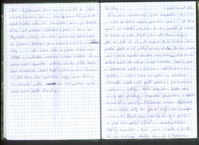

Ráno jsme absolvovali opět koupačku v moři a zlehka nasyceni perníkem jsme vyrazili na letiště, abychom se tam poptali po nějaké té krabici na kolo. Projeli jsme dva terminály a ptali se, kde to šlo,ale vypadá to, že krabice v Nice prostě došli a už žádný nikdo nedá. Trochu znechuceni vývojem našeho slavného lovu krabic jsme se, ale s chutí pustili do nákupu v supermarketu. Dopřáli jsme si zaslouženou snídani a s koly obtěžkanými naším obědem a večeří jsme se vydali na návštěvu Monaka. Cesta vedla podél pobřeží a byla lemována moderními hotely i obřími haciendami. Cestou jsme minuly dva přístavy s bezpočtem plachetnic a několika zaoceánskými parníky. Překrásnou scénérii doplňovaly monumentální štíty hor poseté místy vilami neznámých milionářů. Projeli jsme několika tunely a po chvíli se před námi otevřel výhled na mnohohvězdičkové hotely Monaka. Sjeli jsme k vodě a ocitli se na známé dráze formule 1. Vybaveni mapou z informačního centra jsme pokračovali stále po závodním okruhu a odbočili až u kasína Monte Carlo. Opřeli jsme kola v parku a rychle udělali pár fotek. Jelikož jsme nebyli vybaveni smokingy a naše ocelové oře nejezdili na naftu, tak si nás strážný pečlivě měřili. Naše přítomnost zde mezi turisty s peněženkami přetékajícími eury asi nebyla úplně žádaná a tak jsme se vrátili na okruh a prorazili si cestu na pláž. Vykoupali jsme se a když jsme schli u kol, tak jsme potkali dva čechy na silničkách, kteří také cestují,ale autem a kola vozí sebou. Pokec s někým známým vždy potěší, ale čas nás tlačil a tak jsme po čtvrté vyrazili zpět do Nice. Udělali jsme po cestě na pláži obědovou pauzu a ještě se jednou vykoupali. Na spaní jsme zvolili opět stejné místo, protože jich poblíž Nice opravdu mnoho nebylo (žádné jiné o kterém bychom věděli). V deset jsme, ale prozkoumali rákosí vedle nás a objevili cestičku na zapadlou pláž krytou valem. Přístup byl trochu krkolomnější, protože do rákosí jsme museli s naloženými koly sejít dva metry po velkých kamenech. To byl ale jen začátek. Pak jsme se začali prodírat rákosím a vydávali jsem zvuky jako když se američani vylodili ve Vietnamu. Když jsme se z hustého rákosí vynořili na pláži, tak jsme tak asi i vypadali. Se spaním jsme si ale každopádně polepšili. Vyměnili jsme zlehka zapáchající rovný plácek za kamenitou pláž s výhledem na celý záliv vedle Nice.
22. den
vzdálenost: 20 km | čas: 1:00 h:m | pr.: 20,0 km/h
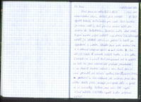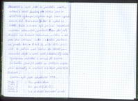Ráno jsme se odhodlali k další sebevražedné akci. Jelikož jsme nechtěli využít letecký balící servis pro naše kola (protože je máme rádi), tak jsme si museli zajet pro krabice do Dekathlonu. Bojovka měla dvě části. Za prvé krabice nějak naložit a za druhé (ta zábavnější část) je dostat 10 km na pobřeží k letišti op výpadovce z města. Odsedlali jsme naše ocelové oře a v úderné skupince vyrazili k bodu X. Tam nás již čekalo 5 opravdu velkých beden a tím pádem i oříšek – co s ními? Chvíli jsme plánovali jak to naložit na kola až jsme nakonec dali přednost jednoduchosti a na dvakrát krabice odvezli v ruce. Chvíli jsme si sice připadali jak bláznivý vynálezci, kteří se vybaveni křídly pokoušejí na kole vzlétnout, ale nakonec jsme zdárně všichni dosáhli pláže. Nakoupili jsme spoustu jídla a vyvalili se na karimatky. Celkem jsme mezi lidi mající různé sedátka a lehátka zapadli a den příjemně utíkal. Dobrovolníci si zajeli ještě na prohlídku města, někteří si zahráli beach, ale všichni jsme se několikrát vykoupali, abychom smyli únavu z předchozích dnů. Před osmou byl čas se vydat na letiště. Cesta s krabicí byla pro Páju tentokrát mnohem zábavnější, protože mu dal jistý frantík na kruháči rozkošnou myšku a tak plně naložené kolo i s krabicí postavil na přední kolo. A tak by se to dalo považovat za jedinou naší kolizi. Na letiště jsme víceméně dojeli a začali opět jednotlivé díly našeho cyklopuzzle rozkládat a rovnat do krabice. Za hoďku jsme již seděli ve vestibulu obklopeni zavazadly a rozjímali o krásně prožitých 22 dnech.
Závěrem bych ještě vyhodnotil TTB.
Fanda 5 | Mišák 5 | Pája 2 | Vašek 1 | Martin 1
7 x píchlá duše | 4 x prasklý drát | 3 x drobnější technické závady